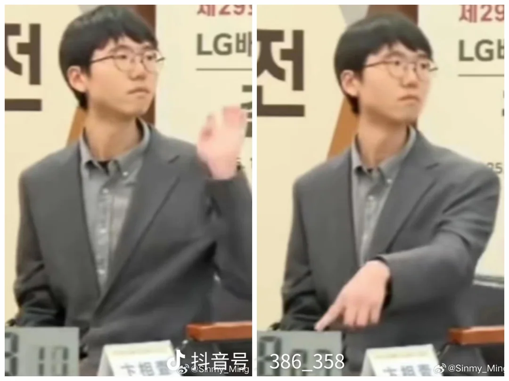

In the Taiwanese preliminaries (see below) the finalist were Lai Junfu and Xu Haohong.
In the Japanese preliminaries (see below), the finalists were Kyo Kagen and Ida Atsushi. Seeded was Shibano Toramaru.
In the Korean preliminaries, the finalists were Kim Myeonghoon, Han Sangjoo, Kang Dongyun, Kim Jinhyu, Lee Changseok, Lee Jihyun, Choi Hyunjae. Seeded were Shin Jinseo, Byun Sangil, Park Junghwan, Shin Minjun, Park Geunho, Won Sungjin.
| 29th LG Cup | |||||
|---|---|---|---|---|---|
| Han Sangjoo | Han Sangjoo W+R 2024-05-20 |
Han Sangjoo B+R 2024-05-22 |
Ke Jie B+R 2024-09-30 |
Ke Jie W+R 2024-10-02 |
Byun Sangil
(B+2.5) 2025-01-20 B+F 2025-01-22 W+F 2025-01-23 |
| Ida Atsushi | |||||
| Shin Jinseo | |||||
| Lee Changseok | Lee Changseok W+R 2024-05-20 |
Ke Jie W+R 2024-05-22 |
|||
| Gu Zihao | |||||
| Ke Jie | |||||
| Kang Dongyun | Lai Junfu B+R 2024-05-20 |
Shin Minjun B+R 2024-05-22 |
Weon Seongjin B+R 2024-09-30 |
||
| Lai Junfu | |||||
| Shin Minjun | |||||
| Weon Seongjin | Weon Seongjin W+R 2024-05-20 |
Weon Seongjin W+R 2024-05-22 |
|||
| Xie Erhao | |||||
| Park Geunho | Kyo Kagen W+R 2024-05-20 |
||||
| Kyo Kagen | |||||
| Byun Sangil | Byun Sangil B+2.5 2024-05-22 |
Byun Sangil B+R 2024-09-30 |
Byun Sangil W+R 2024-10-02 |
||
| Mi Yuting | |||||
| Park Junghwan | Park Junghwan W+R 2024-05-22 |
||||
| Shibano Toramaru | |||||
| Kim Myeonghoon | Kim Jinhyu B+2.5 2024-05-20 |
Ding Hao W+R 2024-05-22 |
Lee Jihyun B+R 2024-09-30 |
||
| Kim Jinhyu | |||||
| Ding Hao | |||||
| Choi Hyunjae | Xu Haohong B+R 2024-05-20 |
Lee Jihyun B+R 2024-05-22 |
|||
| Xu Haohong | |||||
| Lee Jihyun | Lee Jihyun B+R 2024-05-20 |
||||
| Fan Tingyu | |||||
"In the third game of the 29th LG Cup World Go Championship held on January 23, Chinese player Ke Jie, 9th dan, failed to put the pieces on the cover of the bowl in time. At the critical moment of the game, when it was the turn of his opponent to make a move, the game was interrupted by the referee. The Chinese Go Association believes that the referee interrupted the game at an inappropriate time, affecting the normal progress of the game. The players were excessively disturbed by the referee and could not continue to complete the game. After appealing to the organizer of the event, the Korean Go Association, and applying for a rematch to no avail, the Chinese Go Association does not accept the result of the third game of this LG Cup."

Referee! Referee! He did it again. Have I won now?
| player | R1 | R2 | R3 | Final |
|---|---|---|---|---|
| 1. Ke Jie | +3 | +4 | +2 | |
| 2. Tan Xiao | −4 | +3 | +4 | −1 |
| 3. Li Weiqing | −1 | −2 | ||
| 4. Lian Xiao | +2 | −1 | −2 | |
| 5. Fan Tingyu | +8 | +7 | +6 | |
| 6. Xie Ke | −7 | +8 | +7 | −5 |
| 7. Yang Dingxin | +6 | −5 | −6 | |
| 8. Yang Kaiwen | −5 | −6 | ||
| 9. Li Qincheng | +12 | +10 | −10 | |
| 10. Mi Yuting | +11 | −9 | +12 | +9 |
| 11. Li Xuanhao | −10 | −12 | ||
| 12. Dang Yifei | −9 | +11 | −10 | |
| 13. Wang Xinghao | +16 | +14 | −14 | |
| 14. Gu Zihao | +15 | −13 | +15 | +13 |
| 15. Xu Jiayang | −14 | +16 | −14 | |
| 16. Zhao Chenyu | −13 | −15 |
| 29th LG Cup, Japanese Preliminary | ||
|---|---|---|
| Kyo Kagen | Kyo Kagen B+R 2024-04-16 |
Kyo Kagen B+R 2024-04-16 |
| Sakai Yuki | ||
| Ida Atsushi | Ida Atsushi W+R 2024-04-16 |
|
| Hirose Yuichi | ||
Third place playoff:
| date | black | white | result | #mv | sgf |
|---|---|---|---|---|---|
| 2024-04-16 | Sakai Yuki | Hirose Yuichi | B+1.5 | 301 | sgf |
| 29th LG Cup, Taiwanese Preliminary | |||
|---|---|---|---|
| Wang Yuanjun | Wang Yuanjun B+R 2024-04-10 |
Lai Junfu W+1.5 2024-04-12 |
Lai Junfu B+R 2024-04-16 |
| Chen Qirui | |||
| Lai Junfu | Lai Junfu B+R 2024-04-10 |
||
| Chen Weiting | |||
| Xu Qingen | Lin Junyan B+R 2024-04-10 |
Xu Haohong B+R 2024-04-12 |
|
| Lin Junyan | |||
| Xu Haohong | Xu Haohong B+R 2024-04-10 |
||
| Lin Lixiang | |||